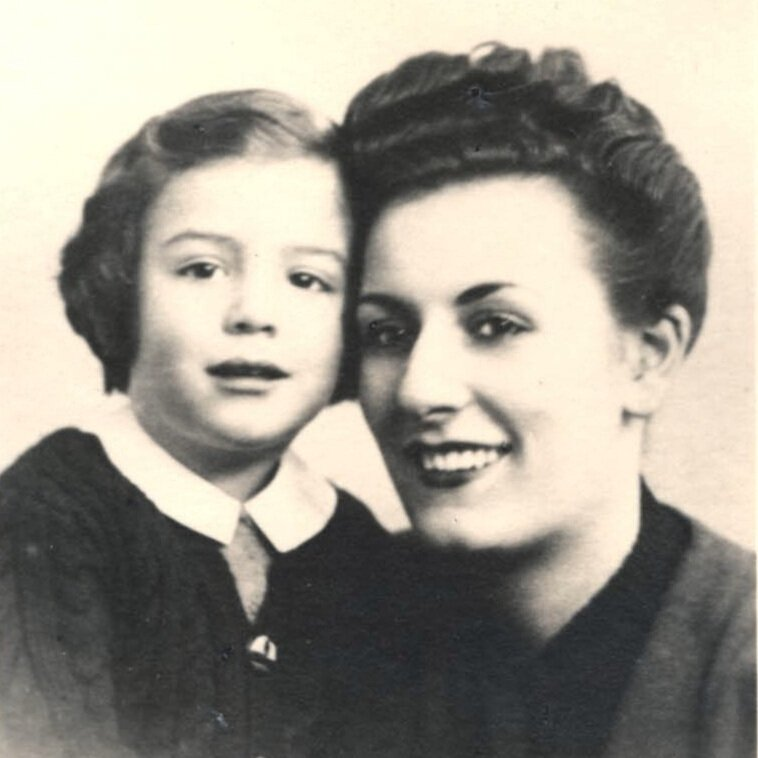

Portrait d’archive
Claude Albert Benmeleh
Claude Albert BENMELEH
Claude BENMELEH est né le 14/01/1939 à Paris en France.
Rassemblé à Lyon, il est déporté à Auschwitz le 28/10/1943 par le convoi n°61. Il est mort en déportation.
Arrêté le 15/10/1943 à Saint Etienne, puis déporté avec ses parents Samuel (né le 17/11/1906 à Brousse) et Suzanne (née le 09/04/1918 à Paris).
Dernière adresse connue : 30, cours Fauriel (Saint-Etienne)
Nom : BENMELEH
Prénom(s) : Claude Albert
Date naissance : 14/01/1939
Âge (ans) : 4
Lieu naissance : Paris 17
Pays ou département : Seine
Lieu rassemblement : Lyon
Dernière adresse : 30, cours Fauriel
Ville : Saint-Etienne
Code postal : 42000
N° Convoi : 61
Date déportation : 28/10/1943
Informations diverses : Claude est le fils de Samuel Benmeleh (17/11/1906, Bursa, Turquie), marchant épicier et de Suzanne (09/04/1918, Paris). Réfugiés à Saint-Etienne, ils vivaient au 30 Cours Fauriel. Ils sont arrêtés le 15/10/1943 à Saint-Etienne, 10 rue Léon Martin, puis déportés par le convoi 61 à Aushwitz.
Son père Samuel est transféré d’Auschwitz à Mauthausen le 25/01/1945 d’où il sera libéré le 05/05/1945 puis rapatrié à Paris (Hotel Lutétia) le 19/05/1945. La cousine de Claude, Michèle déposera une fiche de témoignage à l’Institut Yad Vashem à Jérusalem.
Benmeleh (Claude, Albert), né le 14 janvier 1939 à Paris (17e), décédé le 2 novembre 1943 à Auschwitz (Pologne).
Benmeleh, née Levy (Grade, Suzanne), le 9 avril 1918 à Paris (9°) décédée le 2 novembre 1943 à Auschwitz (Pologne).
Lieu de déportation : Auschwitz
Lieu de départ : Drancy
Nombre total de déporté·e·s du convoi : 1000
Gazé·e·s à l'arrivée : 613 (61,3 %)
Survivant·e·s en 1945 : 42 (4,2 %)